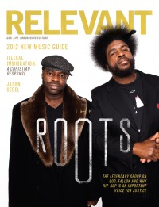

CMnexus
:
Contemporary Christian culture, music, and media.
Magazines
Profiles
Dove Awards
cmnexus.org
CM
nexus
→
Profiles
→
R
The Roots
On the cover

March 2012
Relevant
Media coverage:
Jul 2008 in
Relevant
"The Roots", by
Anthony Barr-Jeffrey
Mar 2012 in
Relevant
"The Roots", by
Ryan Hamm
Albums & reviews:
2002
:
Phrenology
2004
:
The Tipping Point
Jul 2004 in
Relevant
, by
Benjamin Esposito
2006
:
Game Theory
Nov 2006 in
Relevant
, by
Greg Owens
2009
:
How I Got Over
Nov 2009 in
Relevant
2010
:
Wake Up!
with
John Legend
Nov 2010 in
Relevant
2011
:
Undun
Jan 2012 in
Relevant
CMnexus
(noun)
The magazine index
of modern music
and Christianity
© 2011 CMnexus. Last updated September 2019.
Contact:
Rants and other correspondence to:
editor -AT- cmnexus
-DØT- org
About